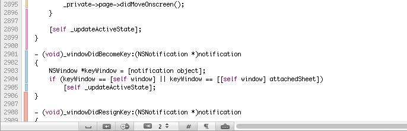
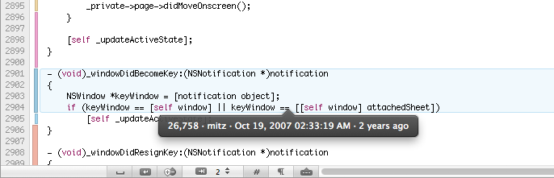

-
Selecting Show Annotations from the View menu.
or
-
Click the annotations button
 at the bottom of the compare view.
at the bottom of the compare view.
Introduced with Cornerstone 2, annotations are a powerful way to inspect the contents of a text file to determine:
Cornerstone's annotations are closely related to Subversion's blame functionality, but provide a more informative and intuitive method of displaying attribution information.
Attributes are displayed along with files' text in Cornerstone's compare view. Annotations are not enabled by default but can be shown by:
Selecting Show Annotations from the View menu.
or
Click the annotations button at the bottom of the compare view.
An additional annotation gutter is displayed next to each file in the compare view.

The annotation gutter is comprised of annotation bars. Each bar in the annotation gutter relates to a block of lines which were committed in the same revision.
For example, in the following screenshot, lines 2896 - 2900 originated in the same revision. While lines 2901 - 2904 were also committed together, they originated in a different revision.
The color of an annotation bar indicates which user contributed the lines. The users represented by the bar colors are listed in the legend window. The use of color to identify users makes it easy to obtain a visual overview of:
The width of an annotation bar indicates how old the lines are. Older sections are represented by wider bars, whereas more recently committed sections are represented by thinner bars.
You can think of older sections of code as having less history (or being less mature) and therefore as having thinner bars.
Information about a section of lines can be displayed by moving the mouse over the lines' annotation bar.
This will result in the section being highlighted and a callout being displayed beneath the section:

The callout displays the following information about the revision when the lines were committed:
Move the mouse out of an annotation bar to hide the callout.
Hold down the Shift key (⇧) while moving the mouse over a file's text to display the callout for the section under the cursor.
You can activate a revision by clicking an annotation bar. The annotation callout is displayed and is expanded to show the log message for the selected revision:

Once activated, all sections from the revision are highlighted and the Previous Lines (⌘↑) and Next Lines (⌘↓) functions in the Compare menu can be used to navigate between the sections.
The sections committed in the active revision are also displayed as markers in the vertical scroller, replacing the difference markers if two files are being compared.
The previous and next buttons below the scroller can be used to navigate between sections.
To deactivate a revision:
Click on another section in the annotation gutter to activate that revision.
or
Click in the text outside sections belonging to the revision.